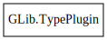

GLib.TypePlugin – gobject-2.0 Reference Manual
Packages
gobject-2.0
GLib
TypePlugin
complete_interface_info
complete_type_info
unuse
use
TypePlugin
Object Hierarchy:

Description:
[
CCode
( lower_case_csuffix =
"type_plugin"
, type_id =
"g_type_plugin_get_type ()"
) ]
public
interface
TypePlugin
All known implementing classes:
TypeModule
Namespace:
GLib
Package:
gobject-2.0
Content:
Methods:
public
void
complete_interface_info
(
Type
instance_type,
Type
interface_type,
InterfaceInfo
info)
public
void
complete_type_info
(
Type
g_type,
TypeInfo
info,
TypeValueTable
value_table)
public
void
unuse
()
public
void
use
()